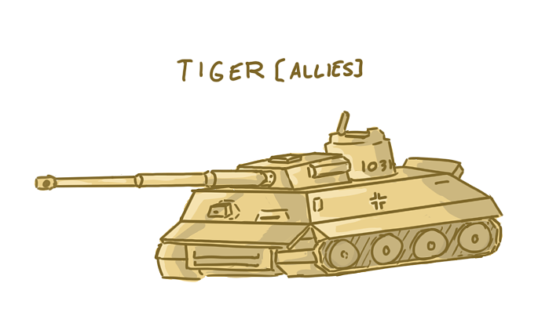
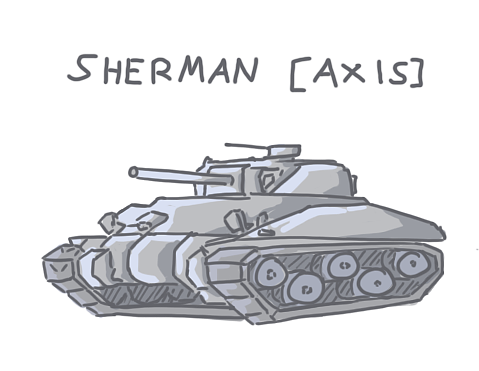
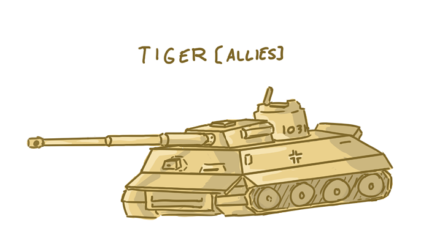
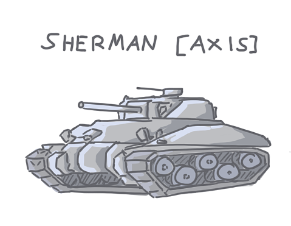

Description
Kactus Und Panzer is an animation modeled and animated in Autodesk Maya. The story take places in a wasted desert located in North Africa. It documented the intense battle between the German Sherman tank and the enemy Tiger Tank. The Tiger tanks has the advantage of being heavily armed with thick armor and deadly weapon. Whereas the Sherman tank is designed as a quick and swift tank with relatively better movement speed with the trade off of lacking armor and firepower. The battle starts with Sherman manuver around the Tiger to dodge its power shots while shooting back. The close battle lead up to the climax when the track of the Tiger is damaged, which stopped it from moving. Simultaneously, the Sherman is coming closer and closer with gradually increasing in fire precision. The critical shot ended the battle was the well placed shot from the Tiger, brutally blown the Sherman tank into pieces.
 




Roles
In this project, I contributed in the modeling, texturing and animation process. I am responsible to create the detailed models of the tank and texture the with material and bump maps. Also, I had to animate them according to the script we established.


Problem + Reflection
I am filled with passion when I model the tanks. Each detail pieces require different workflows in maya in order to achieve the required shape. For example, the tank track is a complicated shape combined with multiple steel plates. Not only do we have to model a highly detailed steel plate, we also need to align the plates into the shape of a ellipse. One of the problem was to rig it so that when it is rotated, the track pieces follow a path to maintain the overall shape of the ellipse. The method we used was using the “wire” tool. Its principle was to bind the circular aligned track to a circular wire. After that is done, we will be able to control its vertex points and manipulate its shape. With that setup, the rotation will always follow the same shape manipulated by the wire. Another one of the memorable difficulties was associated with animation. To animate objects and provide liveliness, we trained ourselves to use the graph animation editor in order to achieve natural movement recoil. They are small detail that are not negligible. If we look at how objects moves in real life with momentum, when an object changes its movement direction or stops, there are most likely recoil that makes it goes back and forth when stopping. With graph editor, we were able to refine our animation curves into smooth lines that revolves around the origin back and forth. As a result, we achieved more lively animation that can communicate an object's weight and momentum. We understood the importance of working out details through the iterate process.